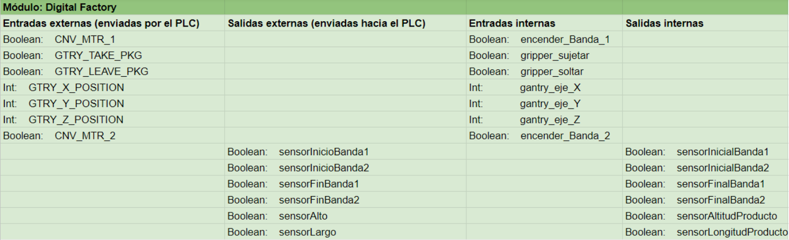

Con el fin de realizar la simulación virtual del funcionamiento del almacén logístico, se elaboró un gemelo digital por medio del cual se puede verificar la correcta operación del mismo.
Se hizo el modelamiento de todos los componentes que hacen parte del almacén logístico. Para ello se utilizó el software de diseño NX en el apartado llamado Mechatronics Concept Designer. En dicho programa se agregaron los elementos físicos del almacén logístico, así como los actuadores, sensores, robots, dispositivos de transporte, entre otros.
 El control de procesos secuenciales del almacén logístico se realizó por medio del software de configuración y programación de controladores lógicos Studio 5000.
El control de procesos secuenciales del almacén logístico se realizó por medio del software de configuración y programación de controladores lógicos Studio 5000.
De esta manera, se realizó la conexión de las señales de sensórica del gemelo digital con las variables asociadas a las entradas del Controlador Lógico Programable PLC; de igual forma, las señales de salida del controlador se asociaron con los actuadores pertenecientes al almacén logístico en NX.
Esta conexión se realizó con una conexión OPC UA server con ayuda del software intermediario Ignition.
Si el lector desea profundizar en la composición de la arquitectura de comunicaciones, por favor consúltese el módulo Industria 4.0. De igual forma, si se desea consultar a nivel de detalle los programas de lógica secuencial que controlan el almacén logístico digital, por favor consultar el módulo de Controladores Industriales.
Si el lector desea conocer a detalle la composición de los subsistemas que componen el almacén logístico, por favor hacer click en el botón de abajo.
Si el lector se encuentra interesado en la forma como la fábrica virtual se comunica con el Controlador Lógico Programable, por favor hacer click en el botón de abajo.
Click aquí para ver la composición del almacén logístico Click aquí para ver comunicaciones con PLCProductos a ser almacenados y despachados
Las dimensiones de dichos productos se muestran en la siguiente imagen. El producto mediano cabe dos veces en el producto grande, y el producto pequeño cabe dos veces en el producto mediano.
El almacén logístico trabaja con 3 tamaños distintos de productos: grande, en color verde; mediano, en color naranja; y pequeño, en color azul celeste.


¿ Cómo se compone el almacén logístico?
Recepción de productos
Almacenamiento de productos
 Clic aquí para
Clic aquí paraCelda robotizada
Despacho de productos
 Clic aquí para
Clic aquí paraSubsistema de recepción de productos
Dicho conjunto se compone de una banda transportadora junto con su motor actuador, sensores capacitivos de detección de elementos, una unidad etiquetadora de los productos y un robot cartesiano.
Este subsistema se pone en funcionamiento cuando el Controlador Lógico Programable indique que hacen falta más productos en el sistema de almacenamiento, específicamente cuando la cantidad de productos almacenados disminuye por debajo del 30% de la capacidad total.
Banda transportadora
Este dispositivo se encarga de transportar los productos que van entrando al sistema hacia las cercanías del robot cartesiano para su posterior colocación en el estante de almacenamiento. Para su funcionamiento se cuenta con un motor con el cual se activa la banda transportadora.
Sensores de detección capacitivos
Con estos dispositivos se logra tanto la detección de los nuevos productos que entran a la banda transportadora, así como la detección de un producto en el final de la banda.
Adicionalmente se requirió utilizar dos sensores adicionales. En conjunto, trabajan de manera coordinada con el objetivo de distinguir el tamaño del producto ubicado en el final de la banda transportadora.
Si los tres sensores se encuentran en TRUE en simultáneo, entonces el producto es grande; si el sensor de final de banda y aquel ubicado en la parte superior se encuentran en TRUE y el sensor que mide el largo de los productos está en FALSE, entonces dicho producto es de tamaño mediano; y si el sensor que va a lo largo está en FALSE y el ubicado en la parte superior está en FALSE, entonces el producto es de tamaño pequeño.
Sensores ubicados en el final de la banda transportadora
Modelo virtual del sensor capacitivo
Unidad etiquetadora de productos
Con dicho dispositivo se logra realizar el etiquetado de los productos que llegan al final de la banda transportadora. Cuando el sensor final hace la detección de un producto, esa señal es enviada al PLC el cual ejecuta la instrucción de etiquetado. Los sellos a colocar dependen del peso del producto y son de la siguiente manera: G para grande, M para mediano y P para pequeño.
Para un correcto etiquetado, existe una lámina que detiene el producto cuando la unidad etiquetadora coloca el sello.
Subsistema de almacenamiento de productos
Este subsistema almacena los productos en un estante, el cual se encuentra ordenado por niveles de acuerdo al tamaño de caja clasificado anteriormente.
En el primer nivel se almacenan los productos de tamaño grande, en el segundo nivel aquellos con tamaño mediano, y en el tercer nivel los de tamaño pequeño.Los productos grandes se colocaron en el primer nivel con el objetivo de que el robot cartesiano haga el menor esfuerzo posible, ya que los siguientes niveles están a más nivel de altura y eso implicaría que el robot se esforzara más en el transporte de productos más pesados; por un criterio similar los productos pequeños se colocaron en el último nivel.
El Controlador Lógico Programable se encarga de llevar el registro de las posiciones que se encuentran ocupadas en el estante de almacenamiento, de tal forma que siempre se colocan los productos de izquierda a derecha y en un espacio vacío dentro del estante.
En la siguiente imagen se muestra dicho conjunto, compuesto por el robot cartesiano, también llamado Gantry, y el estante de almacenamiento.
Estante de almacenamiento
Sobre este elemento son colocados los productos. Su diseño fue hecho de tal forma que el último eje del gantry pueda ingresar al interior a depositar productos.Además, la longitud de su largo fue establecida de tal forma que pudiesen caber 20 productos; son necesarios 20 productos, ya que si los 4 clientes solicitan 5 productos de un solo tamaño se tiene el abastecimiento suficiente para esta demanda.
Robot cartesiano
Dicho elemento, también conocido como gantry, realiza un movimiento hacia el final de la banda transportadora para ir a recoger el producto que se encuentra allí; por medio de un gripper acoplado al eje final del robot, el sujeta el producto y lo lleva al estante de almacenamiento.
Este elemento se compone de un sistema de rieles los cuales proveen de grados de libertad al dispositivo. Existe un eje horizontal denominado ejeX, un ejeY sobre el que se realiza un desplazamiento vertical, y sobre el ejeZ se realiza un desplazamiento lateral.
Los movimientos son ejecutados por medio de 3 servomotores que se encuentran acoplados a cada eje prismático.
Vista frontal
Gripper
Se cuenta con un gripper de referencia comercial VGC10 de la empresa OnRobot, el cual permite la sujeción de los productos a ser almacenados mediante un sistema de ventosas que se activan por medio de una señal eléctrica enviada por el Controlador Lógico Programable; dicha orden se ejecuta cuando el gripper se encuentra en contacto con el producto a ser recogido. De forma similar, luego de que el gripper sostiene el producto hasta su posición final, el Controlador envía una señal para que el sistema de ventosas se desactive y el producto se suelte.
Subsistema de despacho hacia Celda Robotizada
Cuando la celda robotizada necesita más productos para ser despachados, ella envía una señal al subsistema con la información de los tamaños de productos requeridos, de tal forma que se inicia una secuencia donde el gantry toma los productos solicitados uno por uno y los lleva hacia una segunda banda transportadora, la cual los ingresa hacia la celda robotizada.
Se cuenta con un sensor dispuesto en el inicio de la banda con el fin de realizar la detección de los productos que son recién ingresados. En adición, se cuenta con un sensor al final de la misma con el cual se realiza la detección de un producto al final de la banda transportadora, el cual se encuentra ya dentro de la celda robotizada.

En resumen, este subsistema nuevamente se compone del gantry, el estante de almacenamiento, una banda transportadora de la misma referencia que la banda inicial y dos sensores capacitivos. Estos elementos ya fueron descritos en los subsistemas anteriores, así que no se hará mención detallada de estos.
Celda Robotizada
Cuando la celda robotizaLuego de que el sensor final de la banda de ingreso de productos es activado, el PLC envía una orden a la celda robotizada para que el robot manipulador de dirija hacia el producto, lo tome y deposite en uno de los 4 pallets de acuerdo al cliente.
La celda se compone de elementos de seguridad tales como pulsadores, botones, rejas y cortinas de seguridad, entre otros. También se cuentan con 4 pallets, cajas de empaque de productos, el robot manipulador con su controlador y HMI y un gripper de ventosas.
Si el lector desea más detalle, por favor dirigirse al módulo de Celda Robotizada
¿ Cómo la fábrica virtual se comunica con el PLC?
Los procesos lógicos secuenciales de todo el almacén logístico son supervisados y controlados por un Controlador Lógico Programable de Allen Bradley, así que fue necesaria la conexión con el software Studio 5000 por medio de la arquitectura OPC UA Server.
Así que en el software NX, en la función de configuración de señal externa se declaró la comunicación.
Con ella se tiene el acceso a los TAG’s creados en el software Ignition Local en el PC de trabajo de NX. Estos elementos permiten enviar señales desde NX hacia Studio 5000. A continuación, se muestran algunos de ellos.
También, con esta configuración se tiene acceso a los TAG’s creados en Ignition Local del PC de trabajo de Studio 5000, los cuales permiten enviar señales desde Studio 5000 hacia NX. A continuación se muestran algunos de ellos.

Fue necesario crear elementos de tipo adaptadores de señal en NX con los cuales se pudo vincular los estados de cada sensor virtual que posee el almacén logístico para posterior envío de señales hacia Studio 5000. También, con estos elementos fue posible recibir las señales recibidas de Studio 5000 y vincularlas con los actuadores del almacén.
Algunos de ellos se muestran a continuación.
Ya vinculadas las señales que representan los estados de los sensores y actuadores del almacén logístico, se realizó el mapeo de dichas señales con los TAG’s correspondientes a cada una.
Esta asociación entre TAG’s y señales permite ya finalmente que las variables de los sensores se encuentren disponibles en dichos TAG’s y puedan ser leídas por Studio 5000. Adicionalmente, los estados en los TAG’s de Studio 5000 pueden ser leídos por NX y ser representados en los actuadores del almacén.
A continuación se muestra una captura de pantalla del mapeo realizado.
Lista de señales que intervienen en la simulación del gemelo digital
A continuación se presenta un listado de las señales utilizadas en la simulación del almacén logístico. Las señales internas, tanto de entrada como salida, son asociadas a una señales externas por medio de las cuales se realiza la comunicación con el PLC.
created with
HTML Creator .